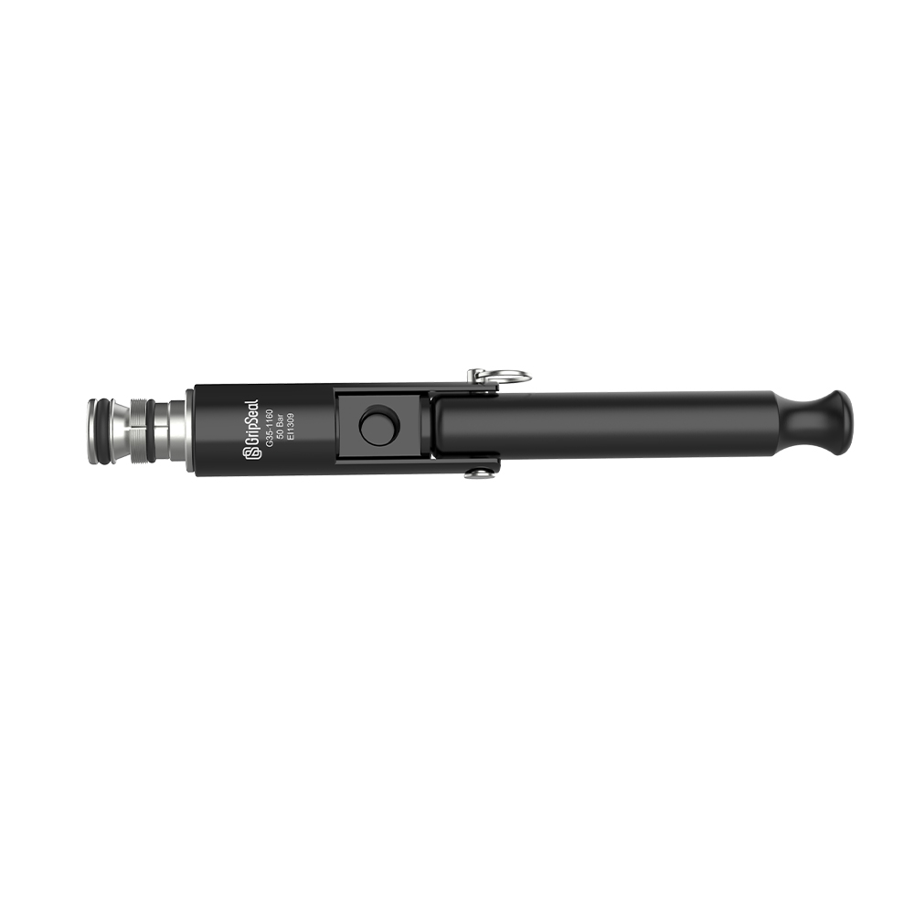
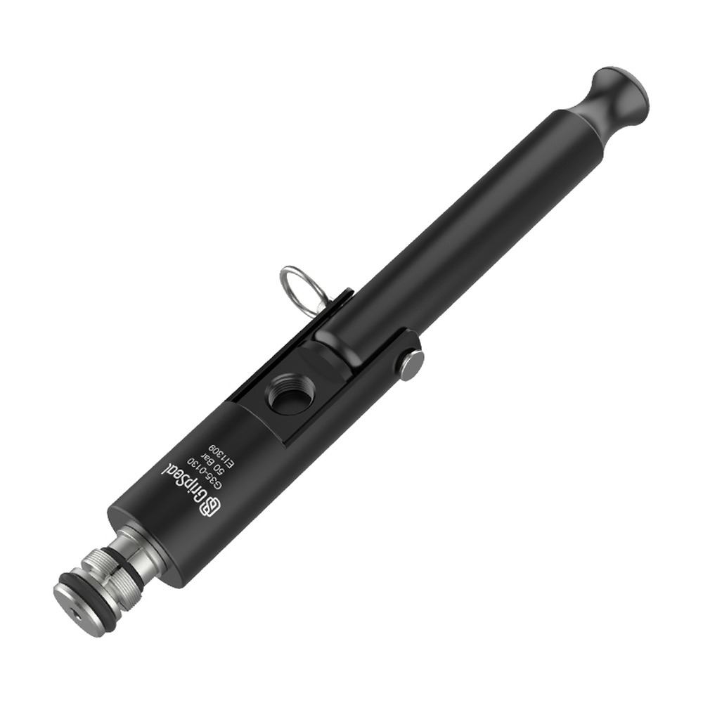

Series overview
High-pressure expansion · pressure-assisted clamping
The G35 Series is a high-pressure internal-expansion sealing solution for copper, steel and aluminium tube, widely used for high-pressure tube ID testing of heat exchangers, pressure vessels, instruments and motor controller cold plates in refrigeration and new energy.
At a Glance
Get G35 Selection SupportTypical uses
Consider this series when the project involves high-pressure tube ID sealing and testing of fittings, heat exchangers or cold plates and needs stable repeated connections.